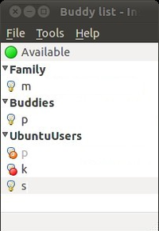
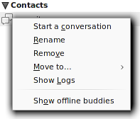
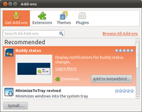

Instantbird
Dieser Artikel wurde für die folgenden Ubuntu-Versionen getestet:
Ubuntu 14.04 Trusty Tahr
Zum Verständnis dieses Artikels sind folgende Seiten hilfreich:
Instantbird  ist ein Instant-Messaging-Client, welcher unterschiedliche Protokolle unterstützt. Hier wird zur Kommunikation mit den Netzwerken auf die Programmbibliothek libpurple von Pidgin gesetzt. Zur Darstellung wird das Application Framework von Mozilla mit einer auf GTK basierenden Oberfläche verwendet. Wie auch andere bekannte Projekte, die auf Mozilla Quelltext basieren, ist Instantbird durch Add-ons erweiterbar.
ist ein Instant-Messaging-Client, welcher unterschiedliche Protokolle unterstützt. Hier wird zur Kommunikation mit den Netzwerken auf die Programmbibliothek libpurple von Pidgin gesetzt. Zur Darstellung wird das Application Framework von Mozilla mit einer auf GTK basierenden Oberfläche verwendet. Wie auch andere bekannte Projekte, die auf Mozilla Quelltext basieren, ist Instantbird durch Add-ons erweiterbar.
Unterstützte Protokolle¶
Unterstützt werden die Dienste/Protokolle:
|  |
| Kontakte |
AOL Instant Messenger (AIM)
Facebook-Chat
Gadu-Gadu
ICQ
MSN Messenger
MySpaceIM
Netsoul
Novell GroupWise
QQ
SIMPLE
XMPP (Jabber)
Yahoo! Messenger
Installation¶
Instantbird ist nicht mehr in den offiziellen Paketquellen enthalten.
Manuell¶
Zur manuellen Installation wird die Archivdatei mit dem vorkompilierten Programm von der Projektseite  in der gewünschten Sprache heruntergeladen und entpackt [1]. Anschließend wird in den Programmordner gewechselt und über
in der gewünschten Sprache heruntergeladen und entpackt [1]. Anschließend wird in den Programmordner gewechselt und über instantbird das Programm gestartet [2]. Auf Wunsch kann ein Menüeintrag[3] vorgenommen werden.
Hinweis!
Fremdsoftware kann das System gefährden.
Portable Alternative¶
Man kann Instantbird auch mobil einsetzen. Um das Programm direkt von einem USB-Stick starten zu können, geht man wie bei der manuellen Installation beschrieben vor, entpackt [1] das herunter geladene Paket jedoch in einen Ordner auf dem USB-Stick.
Nun öffnet man ein Terminal [4] und navigiert in den Ordner auf dem USB-Stick (in diesem Fall z.B. /media/EFA3-40D6/instantbird). Zunächst erstellt man dort einen neuen Ordner, der später das Profil beinhalten wird [4]:
mkdir profile
Als nächstes startet man Instantbird mit dem Zusatz -ProfileManager.
./instantbird -ProfileManager
Nun öffnet sich ein Dialog. Hier löscht man mittels "Delete Profile..." zunächst das Standard-Profil "default" inkl. der dazu gehörigen Dateien ("Delete Files"). Nun erstellt man mittels "Create Profile..." ein neues Profil, indem man dem Assistenten folgt. Als Profil-Ordner wählt man jedoch im zweiten Schritt den soeben erzeugten Ordner /media/EFA3-40D6/instantbird/profile. Nun kann Instantbird mittels  auf "Start Instantbird" gestartet werden.
auf "Start Instantbird" gestartet werden.
Das Programm legt nun alle Konfigurationsdateien auf dem Stick ab.
Bedienung¶
Beim ersten Start überprüft das Programm, ob bereits Konten existieren und startet ggf. den Installationsassistenten, der bei der Ersteinrichtung behilflich ist. Konten können über "Tools -> Accounts" bzw. Strg + ⇧ + A hinzugefügt und verwaltet werden.
Über die Schaltfläche "New Account" lässt sich dort ein Assistent starten, der die für den jeweiligen Kontotyp notwendigen Daten abfragt. Nachdem alle Daten übergeben wurden, erscheint ein weiteres Konto im "Account Manager". Über das Häkchen hinter "Sign-on at startup" kann hier fest gelegt werden, ob das Konto sich automatisch beim Start verbinden soll oder nicht.
Status¶
Durch einen auf das Status-Icon lässt sich der aktuelle Status verändern. Zur Wahl stehen:
| Statusmöglichkeiten | |||
| Icon | Status | Übersetzung | Erklärung |
| Available | verfügbar | man kann und will angesprochen werden | |
| Unavailable | nicht verfügbar | man kann, aber will nicht angesprochen werden | |
| Offline | nicht am Netz | man kann nicht angesprochen werden (Verbindung zum Server getrennt) | |
Darüber hinaus lässt sich durch einen auf die Status-Beschreibung ein eigener Text eingeben, den andere Nutzer sehen können.
Kontakte¶
Neue Kontakte lassen sich bei Instantbird unter "File -> Add Buddy..." hinzufügen. In dem sich öffnenden Dialog gibt man den Benutzernamen ("Username") des Benutzers an, der hinzugefügt werden soll. Unter "Account" wählt man das dazu gehörige Konto aus. Schlussendlich muss unter "Group" noch die Gruppe aus der Dropdown-Liste gewählt werden, zu der der Kontakt hinzugefügt werden soll. Eine neue Gruppe lässt sich leicht durch einen in das Textfeld erstellen.
Kontakte lassen sich verwalten, indem man mit der  auf einen Kontakt klickt. Es öffnet sich ein Menü mit verschiedenen Funktionen:
auf einen Kontakt klickt. Es öffnet sich ein Menü mit verschiedenen Funktionen:
| Kontakte verwalten | ||
| Menüeintrag | Erklärung | |
| "Start a conversation" | ein Gespräch mit einem Kontakt beginnen |  |
| "Rename" | den angezeigten Namen eines Kontaktes verändern | |
| "Remove" | den Kontakt löschen | |
| "Move to..." | den Kontakt in eine andere Gruppe verschieben | |
| "Show logs" | den Mittschnitt der mit diesem Kontakt geführten Gespräche anzeigen | |
Chat¶
Ein Chat-Raum kann über "File -> Join Chat..." betreten werden, wenn mindestens ein Konto für einen Dienst eingerichtet ist, der Chat-Räume unterstützt (zum Beispiel IRC oder XMPP). In dem sich öffnenden Dialog wählt man das entsprechende Konto ("Account") und gibt unter "Channel:" den Namen des Chat-Raums an (zum Beispiel #ubuntuusers). Sollte der gewählte Raum durch ein Passwort geschützt sein, dann sollte dieses unter "Password:" angegeben werden. Wenn gewünscht ist, dass der Raum jedes Mal beim Starten von Instantbird betreten wird, sollte ein Häkchen bei "Auto-join this Chat-Room" gesetzt werden.
Konfiguration¶
Unter "Tools -> Preferences" findet sich die auch von anderen Mozilla-Programmen bekannte Konfigurationsoberfläche. Hier lassen sich einige globale Einstellungen vornehmen.
| Konfigurationsoberfläche | |
| Reiter | Beschreibung |
| "General" | Hier lässt sich zum Beispiel einstellen, ob Konten generell beim Start von Instandbird verbunden werden sollen und wie Instandbird auf neu eingehende Nachrichten hinweisen soll. |
| "Tabs" "Content" "Themes" | Anpassung des Erscheinungsbildes an die eigenen Bedürfnisse. Unter "Content --> Fonts & Colors" lässt sich zum Beispiel die Schriftgröße fest legen. |
| "Privacy" | Datenschutzrelevante Einstellungen vornehmen. So kann unter anderem das Protokollieren der geführten Gespräche abgeschaltet werden. ("Privacy -> Records") |
| "Advanced" | Aktivierung der automatischen Rechtschreibkontrolle ("Advanced -> General -> Conversations -> Check my spelling as I type"), Internetverbindungseinstellungen ("Advanced -> Network -> Connection") und das Update-Verhalten ("Advanced -> Update ") fest legen. |
Experten-Info:
Unter "Advanced -> General -> Advanced Configuration" findet sich der "Config Editor" der ebenfalls aus anderen Mozilla-Programmen bekannt ist und mit dem sich detailliert am Innenleben des Programms schrauben lässt.
Erweiterungen¶
Über "Tools -> Addons" kann der IM um Erweiterungen (Extensions), Themes und Plugins im Funktionsumfang angepasst werden. Eine umfangreiche Liste ist auf addons.instantbird.org zu ersehen.
| Erweiterungen | ||
| Name | Beschreibung | |
| MinimizeToTray | Instandbird als Icon in der Systemleiste anzeigen. Weitere Konfiguration im Addons-Manager möglich. |  |
| Vertical Tabs | Vertikale Anordnung der Chatfenster. | |
| Show Nick | Kontaktnamen in Chat-Räumen mit mehreren Nutzern auch in den Nachrichten einfärben | |
| Status Reminder | Eingabefenster vom Status abhängig einfärben | |
| My Status | aktuellen Status (inkl. Nachricht) auch bei einem Neustart von Instantbird bei behalten | |
| Deutsches Wörterbuch | Wörterbuch mit neuer deutscher Rechtschreibung | |
Tastenkürzel¶
| Tastenkürzel | |
| Kürzel | Ziel |
| Strg + ⇧ + A | Kontoverwaltung ("Tools -> Accounts") |
| Strg + ⇧ + J | Fehlerconsole ("Tools -> Error Console") |
| Strg + Q | Programm beenden ("File -> Quit") |
 - Weitere Instant Messenger
- Weitere Instant Messenger- Erstellt mit Inyoka
-
 2004 – 2017 ubuntuusers.de • Einige Rechte vorbehalten
2004 – 2017 ubuntuusers.de • Einige Rechte vorbehalten
Lizenz • Kontakt • Datenschutz • Impressum • Serverstatus -
Serverhousing gespendet von